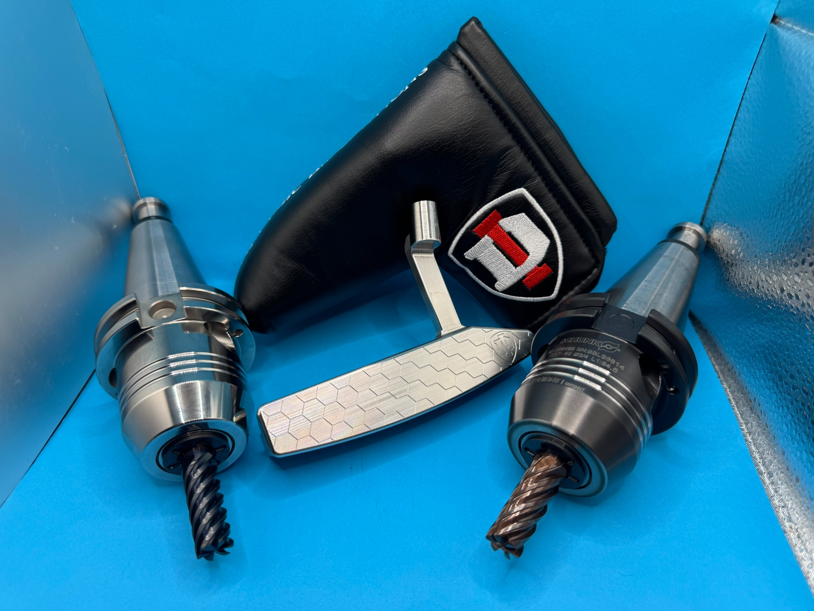
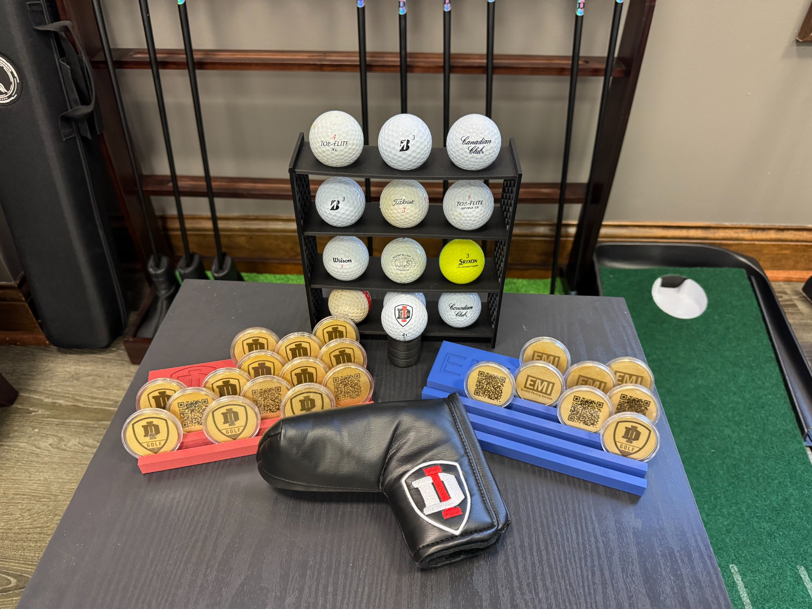
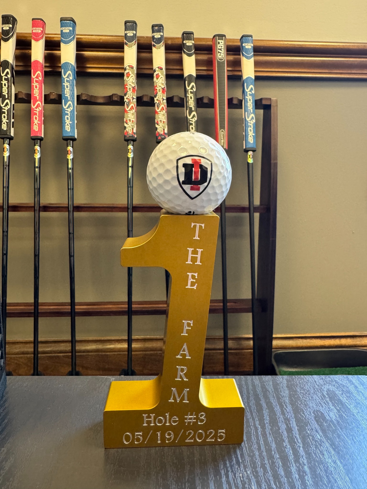

Custom Marker Sets
Perfect for tournaments, teams, company giveaways, and branded gifts.
See Markers
A stronger look at the products and custom work that define the DI Golf brand.


Perfect for tournaments, teams, company giveaways, and branded gifts.
See Markers
Bring worn clubs back to life with refinishing, re-plating, and cleanup.
See RestorationA closer look at custom ball markers, accessories, display pieces, and in-shop craftsmanship.

Custom pieces and branded displays built to stand out.

Ball markers built to match your putter, logo, or event theme.

Unique tournament and event display pieces with engraved details.
Built in-house with careful machining, finishing, and assembly.
“Built in Evansville with the kind of detail, finish, and custom touch that makes every piece feel one-of-one.”
DI Golf creates premium putters, marker sets, restoration work, and event pieces for golfers, teams, brands, and tournaments.
@di.golf2024 — the latest putters, markers, restorations, and custom projects.
Premium builds and finishes.
Custom marker sets and event orders.
Before and after restoration work.
Branded displays, awards, and custom projects.